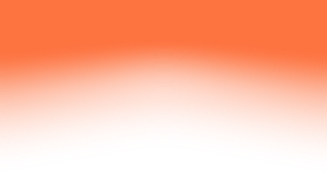
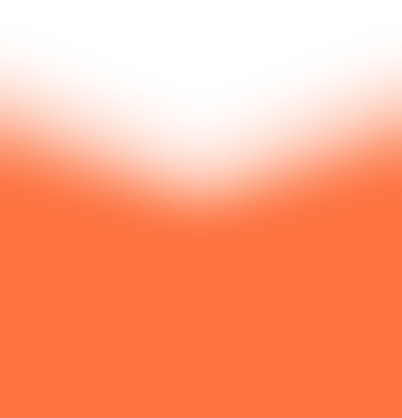
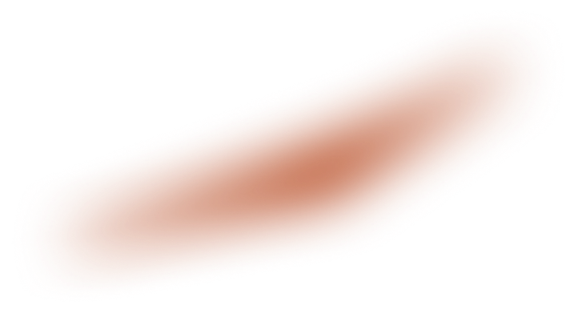
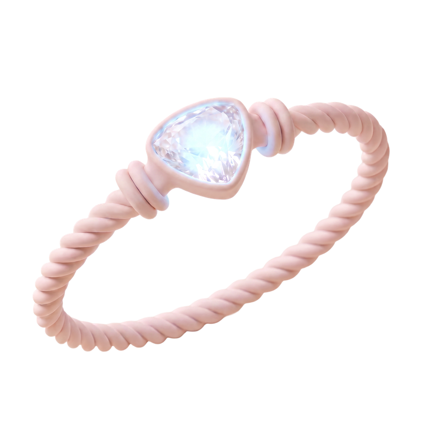

Прототип — Рубинова Анастасия

Check pet

Tap to scan
Check pet
AI analizing...
0%
Hold youre phone
Z
o
o
mie
Zoomie Activation


Sync
Put the device
on Izzy to activate tracking
Keep your Bluetooth on
Swipe to connect
Izzy is meowing about...
You pesky mouse,
I will catch you!
Izzy is meowing about...
My paws are weapons.
You’ve been warned!
Izzy is meowing about...
Don't leave me alone
in here!
20 july, monday
10:00 am
Playing with a mouse
Daily activity
1h 40m
00:00
06:00
12:00
18:00
21:00
00:00
Heart Health
Day
Week
Month
Izzy is more active
than usual
Aug 14–22
240
200
150
110
mon
tue
wed
thu
fri
sat
sun
1 aug
16 aug
00:00
06:30
09:00
12:00
15:00
18:00
21:00
00:00
Heart Rate
150
bpm
Stress Level
25
%
Daily Range
110-240
bpm
Resting
60
bpm
Hydration
Day
Week
Month
Izzy’s drinking frequency
is high today
Range 220–270 ml
Aug 14–22
300
225
150
75
mon
tue
wed
thu
fri
sat
sun
Range 175–270 ml
Aug 1–31
300
225
150
75
1 aug
16 aug
195/300
ml
65%
Drink Count
Weekly Total
Most Active
4/8
times
1700
ml
11
am
Daily Intake
Goal Achieved
Days Met Goal
195
ml
7/7
days
19/31
days